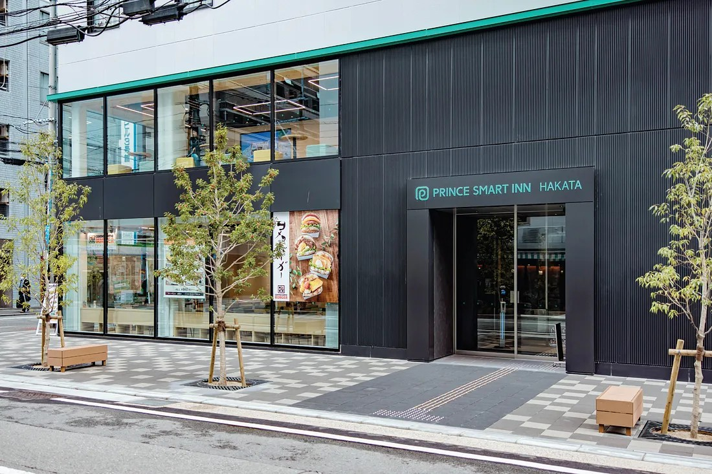
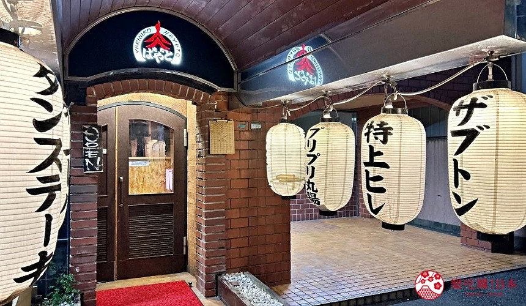
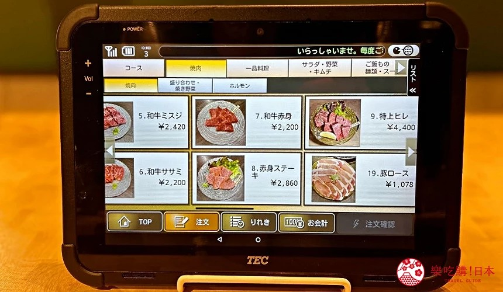
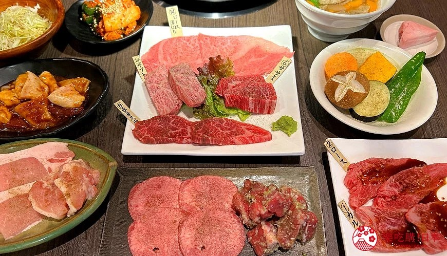

16:55
福岡機場（FUK）
18:10
前往博多市區
18:50
🏨 Prince Smart Inn Hakata
19:00
🥩燒肉 Hayato 博多站東店
📷 Day 1 照片




📝
Dacomecca 麵包｜營業時間 07:00–19:00
飯店至取車點約 550 公尺／步行時間約 8 分鐘
Dacomecca 麵包｜營業時間 07:00–19:00
飯店至取車點約 550 公尺／步行時間約 8 分鐘